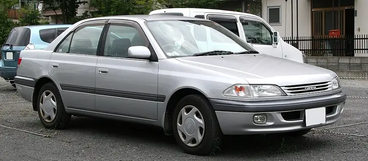
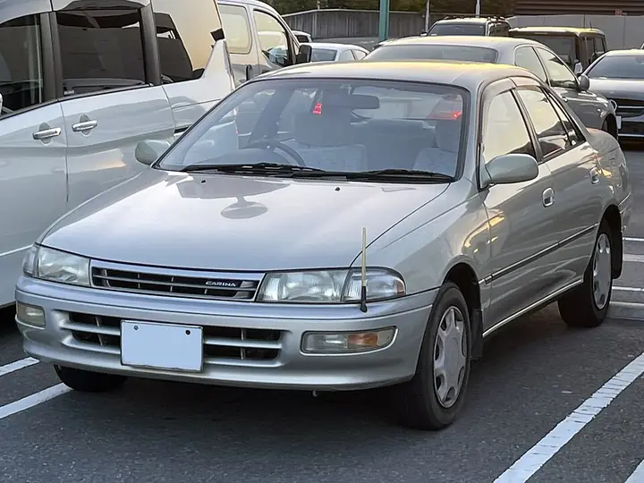
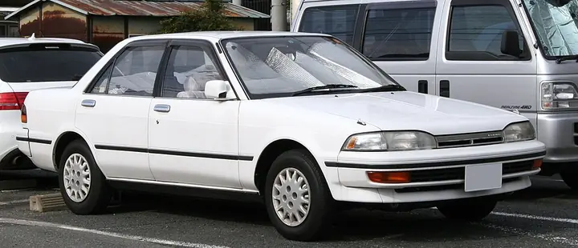
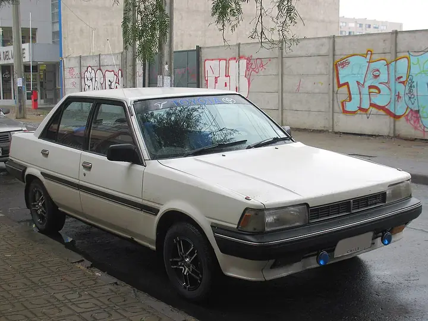
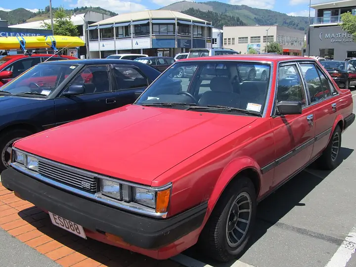
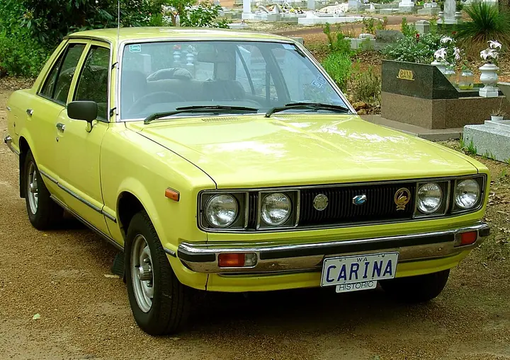
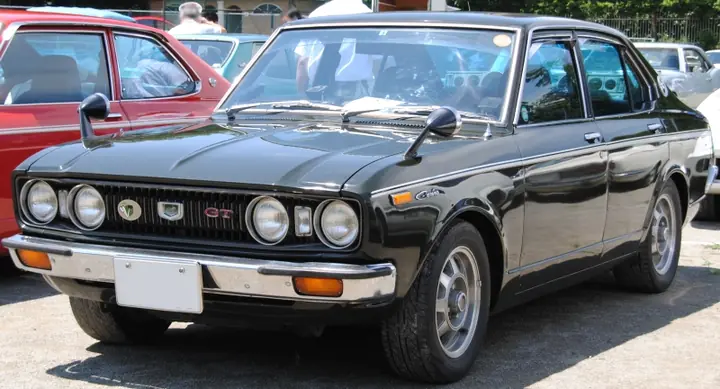

Toyota Carina
Seventh generation (T210; 1996) · 1996–2001
Abstract
This generation of the Toyota Carina was built 1996–2001 in Tahara, Aichi, Japan (Tahara plant). Body styles: 4-door sedan. Layout: Front-engine, front-wheel-drive / four-wheel-drive (T215/216).


1Specifications
| Production | 1996–2001 |
|---|---|
| Assembly | Tahara, Aichi, Japan (Tahara plant) |
| Body style | 4-door sedan |
| Layout | Front-engine, front-wheel-drive / four-wheel-drive (T215/216) |
| Engine | Petrol:1495 cc 5A-FE I4 (AT212)1587 cc 4A-GE 20V I4 (AT210)1762 cc 7A-FE I4 (AT211)1998 cc 3S-FE I4 (ST210/215)Diesel:1974 cc 2C-T turbo I4 (CT210/215)2184 cc 3C-TE turbo I4 (CT211/216) |
| Transmission | 4-speed-automatic5-speed manual C566-speed short shifter manual C160 |
| Wheelbase | 2580 mm |
| Length | 4450 mm4495 mm (facelift) |
| Width | 1695 mm |
| Height | 1400-1410 mm |
| Weight | 1100-1310 kg |
| Related | Toyota Avensis (T220)Toyota Avensis Picnic/Ipsum/Picnic/SportsVan (XM10)Toyota Caldina (T210)Toyota Celica (T200)Toyota Corona (T210) |
2Previous generations

.jpg){kind=link}



.jpg){kind=link}

.jpg){kind=link}




3Generation by generation
Length +8% from the first to the last
A10 19704,135 mm
A40 19774,230 mm
A60 19814,385 mm
T150 19844,335 mm
T170 19884,330 mm
T190 19924,450 mm
T210 19964,450 mm
Weight +26% from the first to the last
A10 1970870 kg
A40 1977935 kg
A60 1981995 kg
T150 1984910 kg
T170 1988960 kg
T190 19921,020 kg
T210 19961,100 kg